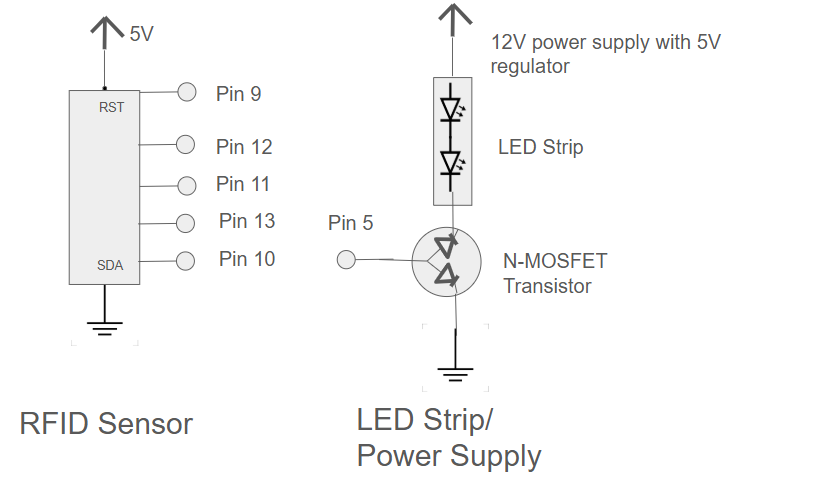
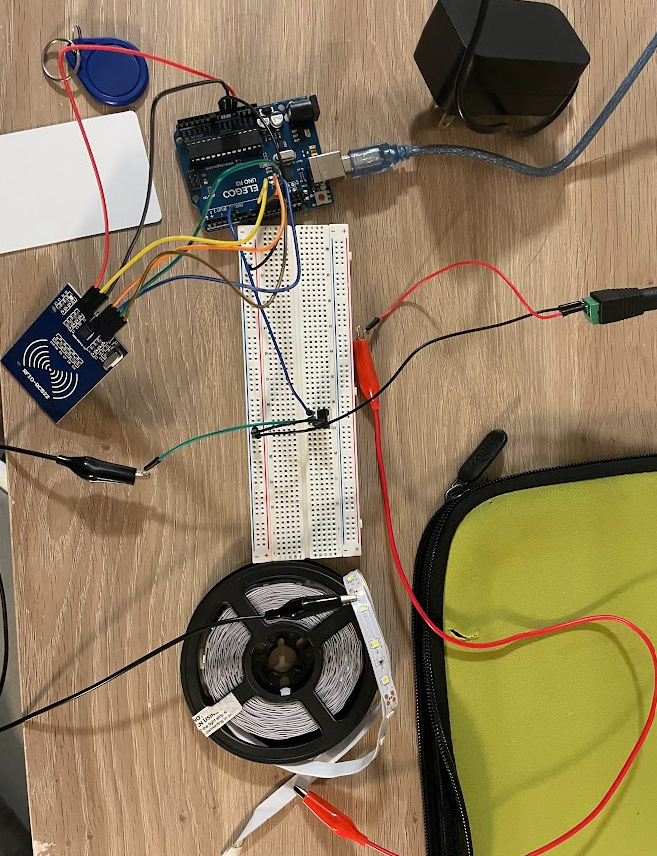
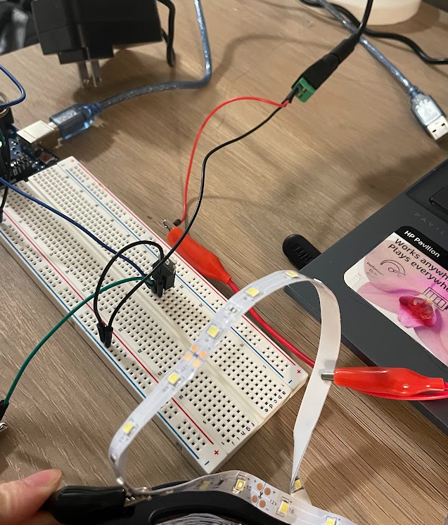
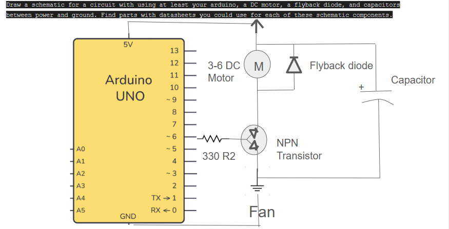
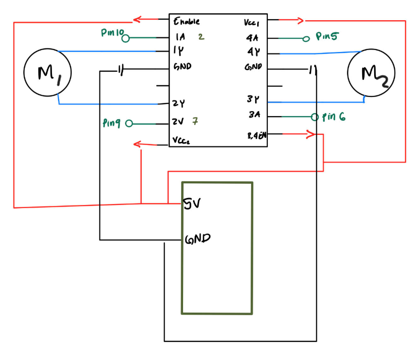

Here is all the documentation for assignment 5! This circuit will turn on an LED strip to different brightnesses with an unique RFID tag
Here is a picture of the schematic used in A5

Power source to LED Strip: Voltage = 5V from the power supply
Into the Transitior: 1.7A into the transistor see below calculation.
Omh's Law: V = I * R
Max current of the transistor 80 A according to the datasheet. We are sending 5V through the LED strip via the regulator.
The LED strip has resistors built into the circuit as well as white LEDs with a voltage drop of 3.3V
For all 3 white LEDS: 3.3V * 3 = 9.9V
The resistor on one segment of the LED strip says 181Ω so we will use that to find the current of one 3 LED segment
12V - 9.9V = 2.1V then 2.1V / 181Ω = 0.012A or 12mA
There are 98 sets of the 3 LED segments in the roll so 0.012A * 98 = 1.17 A for the roll
This is less than the max current of 80 A.
Here is a picture of the circuit used in A5
 Here is a GIF of A5 in action

Here is the code used for A5.
// Imports the SPI library
#include
// Imports the RFID library
#include
// Sets the SS pin of the RFID reader to pin 10
int ssPin = 10;
// Sets the RESET pin of the RFID reader to pin 9
int resetPin = 9;
// Sets the led strip gate pin to pin 5
int ledPin = 5;
// Initializes the RFID with the given pins, to be used later
MFRC522 rfid(ssPin, resetPin);
// Names the card with UID 53 E3 41 00 as an array
byte cardUID[] = {0x53, 0xE3, 0x41, 0x00};
// Names the chip with UID 83 1C 40 2D as an array
byte chipUID[] = {0x83, 0x1C, 0x40, 0x2D};
// Begins set up
void setup() {
// Sets the LED strip gate pin (5) as an output
pinMode(ledPin, OUTPUT);
// Begins SPI
SPI.begin();
// Initalizes the RC522
rfid.PCD_Init();
}
// Loop will read the UID and match it with the first 4 characters of either the card of chip and turn on the lights to their prefered brightness
void loop() {
// Detects presence of a new card, not the one previously read
if (rfid.PICC_IsNewCardPresent()) {
// Reads the UID and stores it
if (rfid.PICC_ReadCardSerial()) {
// If the first, second, third, and fourth characters of the read rfid are the same as the first 4 of the cardUID array then proceed with the for loop
if (rfid.uid.uidByte[0] == cardUID[0] && rfid.uid.uidByte[1] == cardUID[1] && rfid.uid.uidByte[2] == cardUID[2] && rfid.uid.uidByte[3] == cardUID[3]) {
// Loop: Increase the fadeValue/ brighness of the LED strip by 5 until it reaches 100
for (int fadeValue = 0; fadeValue <= 100; fadeValue += 5) {
// Send the increased brightness to the LED pin
analogWrite(ledPin, fadeValue);
// Wait for 30 miliseconds as a gap
delay(30);
}
// If the first, second, third, and fourth characters of the read rfid are the same as the first 4 of the chipUID array then proceed with the for loop
}else if (rfid.uid.uidByte[0] == chipUID[0] && rfid.uid.uidByte[1] == chipUID[1] && rfid.uid.uidByte[2] == chipUID[2] && rfid.uid.uidByte[3] == chipUID[3]) {
// Loop: Increase the fadeValue/ brighness of the LED strip by 1 until it reaches 10
for (int fadeValue = 0; fadeValue <= 10; fadeValue += 1) {
// Send the increased brightness to the LED pin
analogWrite(ledPin, fadeValue);
// Wait for 30 miliseconds as a gap
delay(30);
}
// If there is no match keep the LED strip off
}else {
analogWrite(ledPin, 0);
}
// Stop after reading
rfid.PICC_HaltA();
}
}
}
}
Additional Questions
Question 1: What is the absolute maximum amount of current between pins 2 and 3?
According to the datasheet the continuous drain current is 37.2 A, this is the maximum current when the current is continuous
However, if the current is happening in pulsed duty cycles then (10µs Pulse, Duty Cycle = 1%) then the maximum current is 80 A.
Question 2: Draw a schematic for a circuit with using at least your arduino, a DC motor, a flyback diode, and capacitors between power and ground. Find parts with datasheets you could use for each of these schematic components.

Datasheets:
DC motor: https://www.ti.com/lit/gpn/DRV8840
Arduino: https://docs.arduino.cc/resources/datasheets/A000066-datasheet.pdf
Flyback diode: https://www.digikey.in/htmldatasheets/production/1914435/0/0/1/1n4001-1n4007.html
Capacitor: https://docs.rs-online.com/e491/0900766b8173e2ff.pdf
Question 3: Here is the datasheet for the L293D chip: https://www.ti.com/product/L293DLinks to an external site..
Draw a schematic using at least your arduino, this chip, and two motors. Write (pseudo) code that shows how you would move the motors both forward, both back, then one forward one back, and one back then forward.

int = 10;
int = 9;
int = 5;
int = 6;
void setup
pinmode(10,OUTPUT);
pinmode(10,OUTPUT);
pinmode(10,OUTPUT);
pinmode(10,OUTPUT);
//Both forward
digitalWrite(10,HIGH);
digitalWrite(9,LOW);
digitalWrite(5,HIGH);
digitalWrite(6,LOW);
//Both back
digitalWrite(10,LOW);
digitalWrite(9,HIGH);
digitalWrite(5,LOW);
digitalWrite(6,HIGH);
//One Back two forward
digitalWrite(10,LOW);
digitalWrite(9,HIGH);
digitalWrite(5,HIGH);
digitalWrite(6,LOW);
//Two forward One back
digitalWrite(10,HIGH);
digitalWrite(9,LOW);
digitalWrite(5,LOW);
digitalWrite(6,LOW);